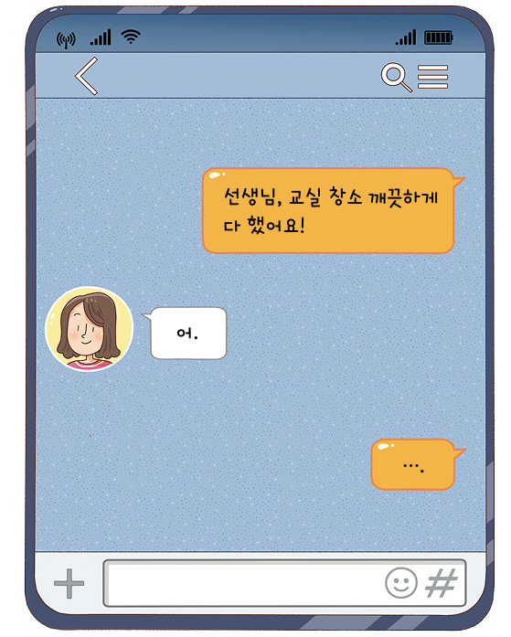

자료 읽기모바일 메신저를 사용할 때 가져야 할 태도

오늘날 많은 사람은 모바일 메신저를 이용하여 다른 사람과 소통한다. 모 바일 메신저는 상대방과 직접 만나지 않고 의사소통을 할 수 있어 편리하지 만, 상대방의 표정이나 목소리 등을 직접 확인할 수 없기 때문에 상대방의 감 정을 파악하기 어렵다. 특히 모바일 메신저에서는 단어 하나, 문장 부호 하나 로 그 의미가 달라질 수 있어 오해와 갈등이 생길 수 있다. 따라서 상대방이 내가 보낸 문자를 어떻게 받아들일지 고민하고, 내가 보낸 문자로 인해 상대 방이 불쾌감을 느끼지 않도록 배려해야 한다.
민수는 선생님께서 부탁하신 교실 청소를 마친 뒤, 선생님께 청소를 마쳤다는 문자를 보냈다. 그런데 선생님께서 민수의 문자에 ‘어.’라며 단 순하게 답장하셨다. 민수는 자신이 무언가를 잘못하여 선생님께서 화가 나신 것 같다는 생각이 들어 걱정되었다.
● 모바일 메신저를 이용하여 다른 사람과 소통할 때 고려해야 할 점은 무엇일까?
다른 사람이 내 메시지를 읽고 오해하지는 않을지 생각해 보며 소통해야 한다.